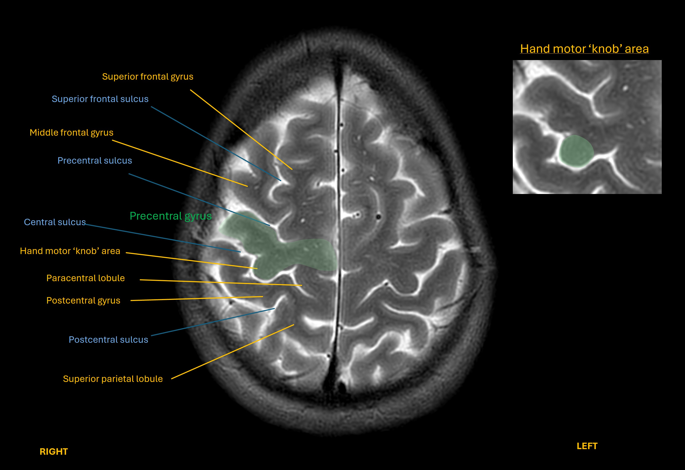
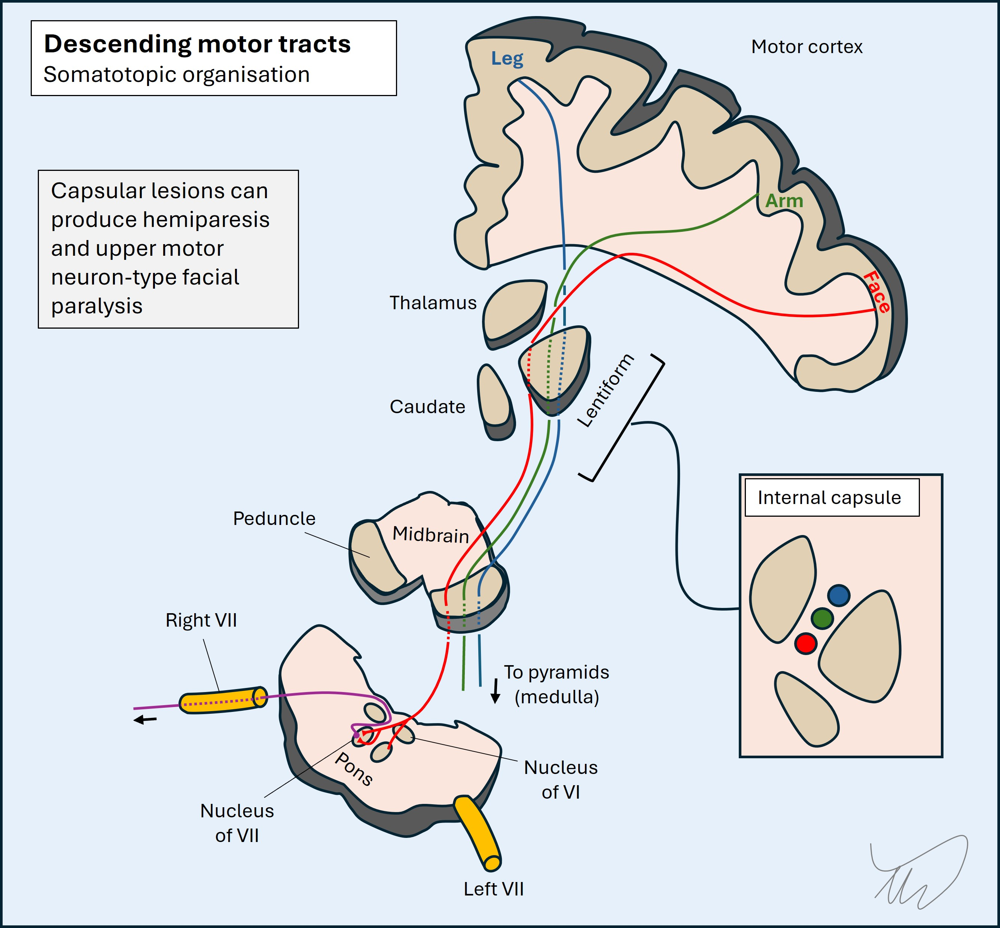
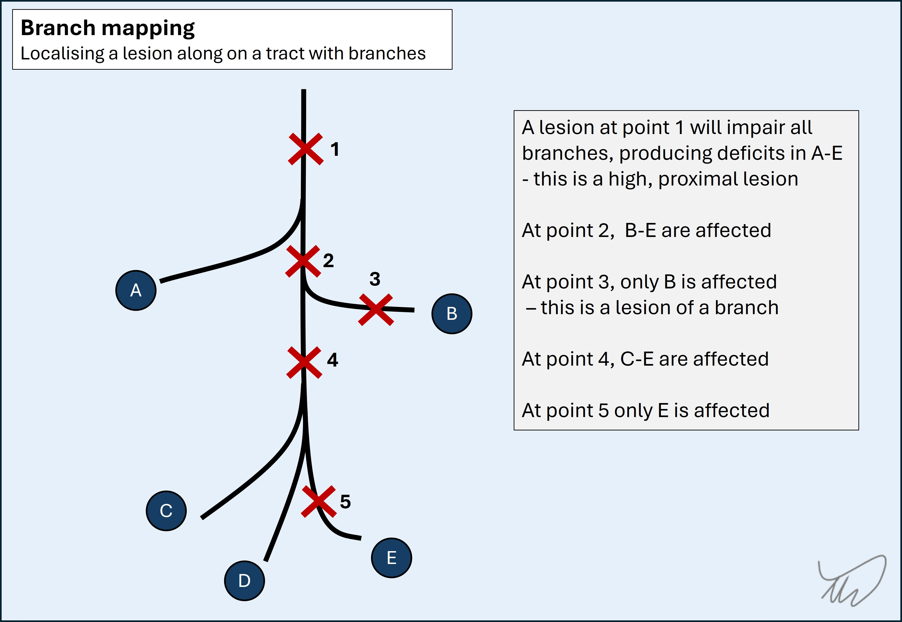
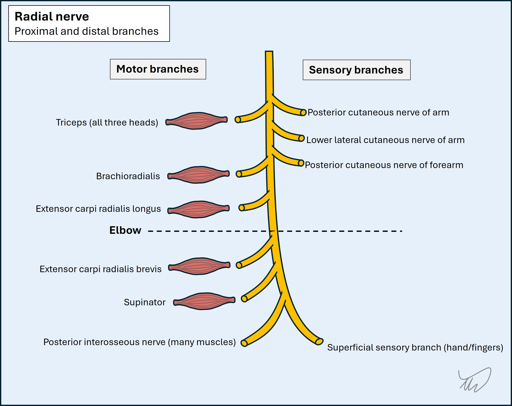
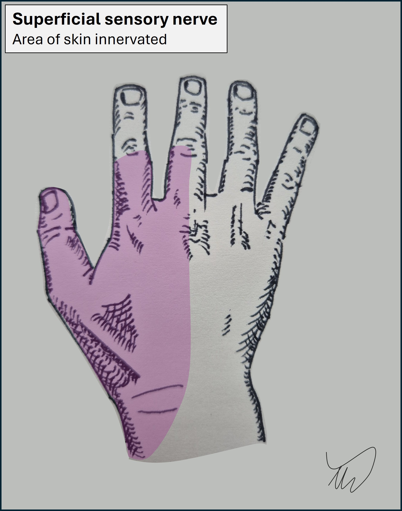
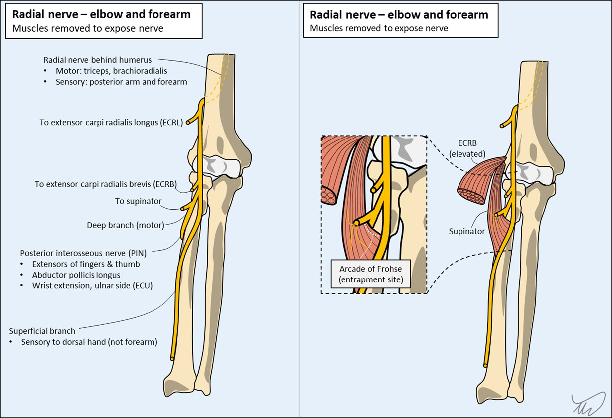
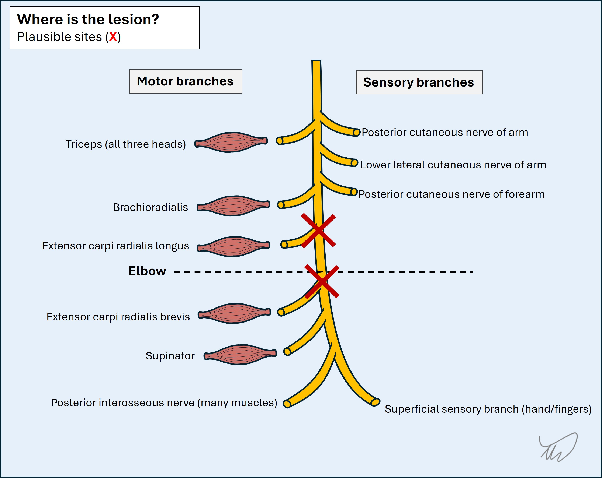
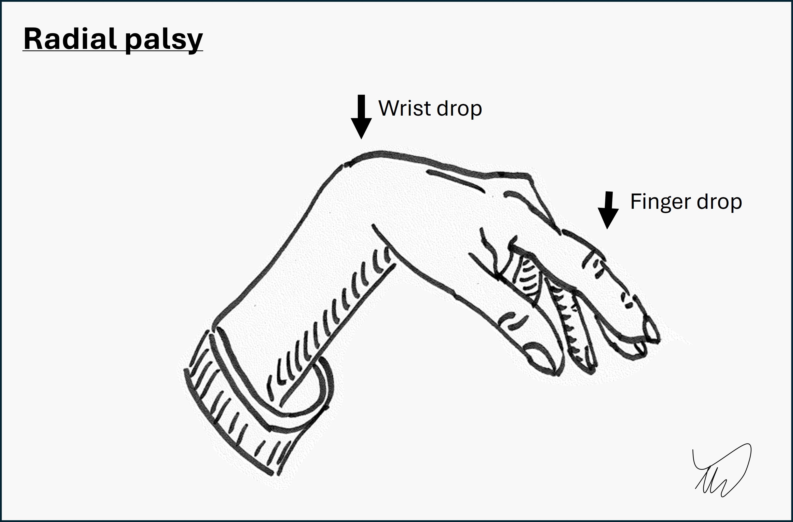

Case 7. A weak hand on waking
Where is the lesion?
This patient awoke with paralysis of the wrist and of finger movements, though not all of them. She has a wrist drop and finger drop - drop simply refers to a body part hanging down instead of staying in its usual position, due to weakness in extensor muscles. She also has some sensory loss in the dorsal hand.
Weakness in a hand can be due to lesions in various sites, in both the central and peripheral nervous systems. The problem can be localised according to which muscles are affected and the distribution of sensory loss (if present - it isn't always).
Central nervous systemThe hand is an important part of human anatomy. It is capable of making many different movements, and when it becomes weak, the consequences are very disabling.
Given its importance, and the complicated hand functions we can make with the dozens of muscles involved, there is a distinct area of the motor cortex (precentral gyrus) dedicated to it, visible on axial imaging as a ‘knob’.

Lesions in the this area of the cortex (such as a stroke) can paralyse the hand – but the pattern is global hand muscle weakness. A lesion here would not selectively spare some of the finger movements this patient is still able to make such as flexion and abduction.

With the exception of the subcortical fibres immediately below the hand area of the motor cortex - which, again, would not tend to only affect the extensors - deeper brain structures are unlikely to produce isolated hand and wrist weakness because the corticospinal tract travels together with fibres innervating the rest of the arm as well as the leg and face on the same side. For example, an internal capsule posterior limb lesion would not tend to spare the rest of the arm and would often also affect the leg and face.
This is also true for the brainstem and the spinal cord – a lesion in either would not usually cause isolated hand and wrist weakness.
Peripheral nervous systemRoots
Several things help us identify root lesions:
Root pathology is unlikely to selectively paralyse the hand and wrist and spare the other muscles or areas of cutaneous sensation beyond the hand:
In summary, if the finger and wrist extension seen here were due to a root lesion, we would expect additional affected muscles, likewise other areas of skin being involved.
Reflexes are also helpful clues to root lesions, as reflexes tell us about one or more roots which supply them - some such as biceps (C5-C6) have multi-root input, while others such as brachioradialis (C6) are fairly pure, reflecting a single root. Here, the retained triceps reflex is evidence against a C7 lesion.
Root lesions are also usually painful in the acute phase, but here there is no pain.
So this doesn't sound like a root lesion.
PlexusThe plexus is another possible site, but similar issues apply as with the roots. There is no obvious site in the plexus that would account for this combination of features, and other, more proximal, weakness would be expected as well as sensory abnormalities.
For example, the posterior cord supplies the fibres that become the radial nerve - including those that extend the wrist and fingers - but also the more proximal muscles (e.g. triceps) which are spared here, and in addition the axillary nerve, which is spared (shoulder abduction is strong) - so a lesion here does not fit.
Peripheral nervesThis leaves the peripheral nerves. Note - a neuromuscular junction or muscle disorder would not acutely present with such focal weakness - and sensation would not be affected.
Ulnar (finger abduction) and median (finger flexion, thumb abduction) groups are spared, whereas all the muscles affected are innervated by the radial nerve, so a radial nerve lesion seems likely here.
This is a long nerve – the pathway spans the humerus, elbow and forearm until the hand. It gives off many branches on its path, and we can localise the affected site based on the weak muscles and numb skin areas - branch-mapping. Remember, the more proximal the lesion, the more extensive the deficits: every branch distal to it will be affected.

A schematic diagram of the radial nerve branches at various levels is shown below:

The muscle groups and sensory area involved in this case are distal, so this is not likely to be a high radial lesion – e.g. at the axilla or around the humeral shaft. High/proximal lesions would affect triceps - with weak elbow extension and reduced/absent triceps reflex - as well as sensation over the posterior arm and forearm via the posterior cutaneous nerves of arm and of forearm respectively. These emerge quite high up, even though they innervate the forearm skin, so only a proximal radial lesion will affect them.
If the lesion were at a point in the nerve distal to where a branch leaves to supply the triceps, but still above the elbow, we would also expect brachioradialis involvement - with some elbow flexion weakness and loss of the ‘supinator’ reflex. This reflex is poorly-named and really tests the brachioradialis, by stimulating near its insertion site in the distal radius. However, there are no signs of a lesion at this level here so the problem must be more distal.
The last muscle innervated by a branch of the radial nerve emerging just above the elbow (above the lateral epicondyle) is the extensor carpi radialis longus (ECRL). Then the nerve crosses the elbow. Just below the elbow the radial nerve innervates the extensor carpi radialis brevis (ECRB).
Then it divides into superficial and deep branches, separating sensory and motor functions:

The branches are shown below:

The PIN can be come trapped by the arcade of Frohse, a membranous edge of the supinator, as it travels below this structure. The PIN is a motor-only nerve, so sensation is not affected PIN lesions - they only produce weakness. Our patient has numbness, so the lesion must be at a point proximal to this division - but not much higher up, or we'd see weakness in other muscles.
In addition, the PIN innervates extensor carpi ulnaris (ECU) - but as we’ve just seen, not ECRB or ECRL. In a PIN lesion there is partial wrist extension weakness but not complete – if the patient’s hand is placed on a flat surface and extension is attempted, the wrist deviates radially due to the extensor carpi radialii muscles, which are spared. This patient however has 0/5 power in wrist extension.
SummaryHere, the following are weak:
Ulnar- and median-innervated muscles are intact, as are their sensory territories. The problem is in the radial nerve.
Elbow extension is strong, and the brachioradialis reflex is intact.
Sensation is lost in the territory of the superficial sensory branch, but not in areas supplied by the branches which emerge much more proximally - including the forearm.
Taking this together, she has a radial nerve lesion around or just above the elbow, but no more proximally. It can be difficult to tell if both extensor carpi radialis muscles are affected or just one, hence the two options given.

The picture is of a 'wrist drop' and 'finger drop' - producing a characteristic hand appearance, with wrist and fingers dangling limply:

What is the lesion?